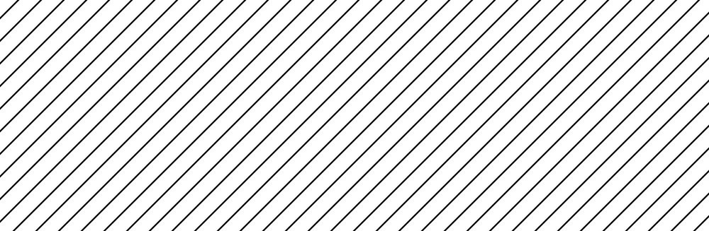

Introduction
unNulling is a multi-device complementary multisensory experience. Participants are encouraged to place their electronic devices together with others’ and manipulate audio and visuals generated on the web app. Upon entering the experience, each device starts producing noise and colours. Users manipulate both, by interacting with three sliders. The noise passes through a web of equalisers in which each device constitutes a node. User inputs are stored and reproduced on other devices in a complementary way, creating a null in the processing chain but bringing the specificity of each device to the fore.
Concept and Background Research
Inspired by several papers published on the issue Collective and Networked Sound Practices in Organised Sound, I began imagining an experience driven by multiple user interaction. The seed was planted by Papadomanoloki (2021), who refers to a polyphony of elements in networked sound experiences which include the materiality of the technologies itself. Taking advantage of a network of devices, I designed unNulling as an example of media multiplicity, what Bown et al. describe as an array of lights and speakers which are assembled as moving elements of a multiplicitous media design space (2021). The space itself is characterized by the same sound reproduced by all devices. Each device can affect the noise in a unique way. At the same time, counteractions on other devices restore the original sound. What emerges is not the sound itself, but the specificity of the technologies involved. A polyphony of utterances (Papadomanoloki, 2021), a collective production of interwoven, dissident subjectivities (Guattari, 2005).
Technical Implementation

unNulling relies on Node.js, Express.js and Socket.io to build a server that handles requests coming from each user. In app.js, it is worth noting that each connection to the server is stored in serverNumUsers. Every time this changes, it is sent to sketch.js through io.emit(), in order to keep track of this number on the client-side as well. Other user interaction is handled with socket.broadcast.emit(), to avoid sending changes back the original sender. In sketch.js, the two main buttons join and stop control the noise, which is processed through a filter in “peaking” mode. Three sliders control the filter frequency, resonance and gain, as well as the rgb values of the canvas. Dragging each slider calls changeFrequency() and changeBackground() for updating graphics and sound on the user device, while also emitting the message that the server-side picks up to notify other users of the changes. These are then processed on the client-side in a complementary way: based on the value received, filter gain values and background rgb values are mirrored, but also scaled down, based on how many users are connected.

Reflection and Future Development
Reflect on how the project went, what went well, what you learnt etc. Based on these reflections, conclude with how you would further develop this project if you were to make another version or how you would further develop your ideas.
References
- Bevilacqua, F. et al. (2021) ‘On Designing, Composing and Performing Networked Collective Interactions’, Organised Sound, 26(3), pp. 333–339. Available at: https://doi.org/10.1017/S135577182100042X.
- Bown, O. et al. (2021) ‘Hacking the Medium: Shaping the creative constraints of network architectures in multiplicitous media artworks’, Organised Sound, 26(3), pp. 305–316. Available at: https://doi.org/10.1017/S135577182100039X.
- Emmerson, S. (1994) ‘“Live” versus “real-time”’, Contemporary Music Review, 10(2), pp. 95–101. Available at: https://doi.org/10.1080/07494469400640331.
- Guattari, F. (2005) The three ecologies. London ; New York: Continuum.
- Paine, G., Bevilacqua, F. and Matuszewski, B. (2021) ‘Editorial: Collective and networked sound practices’, Organised Sound, 26(3), pp. 303–304. Available at: https://doi.org/10.1017/S1355771821000388.
- Papadomanolaki, M. (2021) ‘Telematic Sound Body: A trajectory of intimacy and defiance’, Organised Sound, 26(3), pp. 317–326. Available at: https://doi.org/10.1017/S1355771821000406.